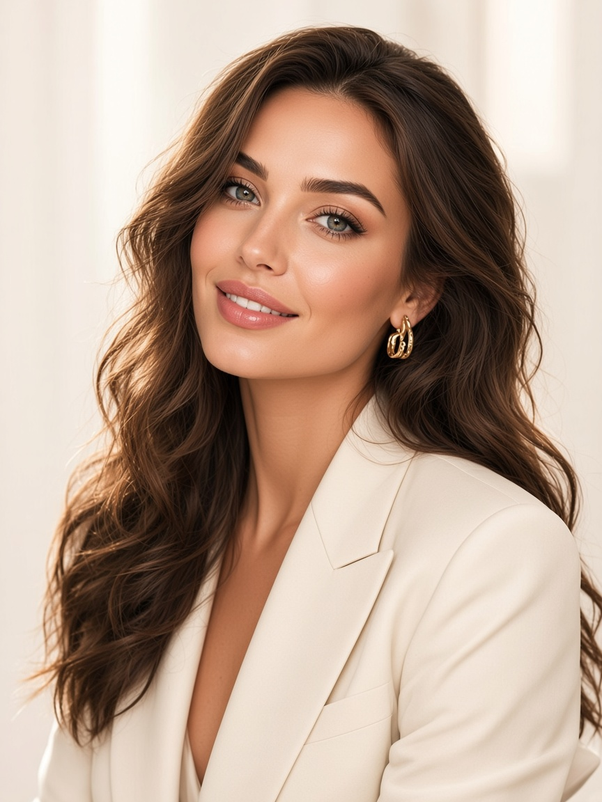
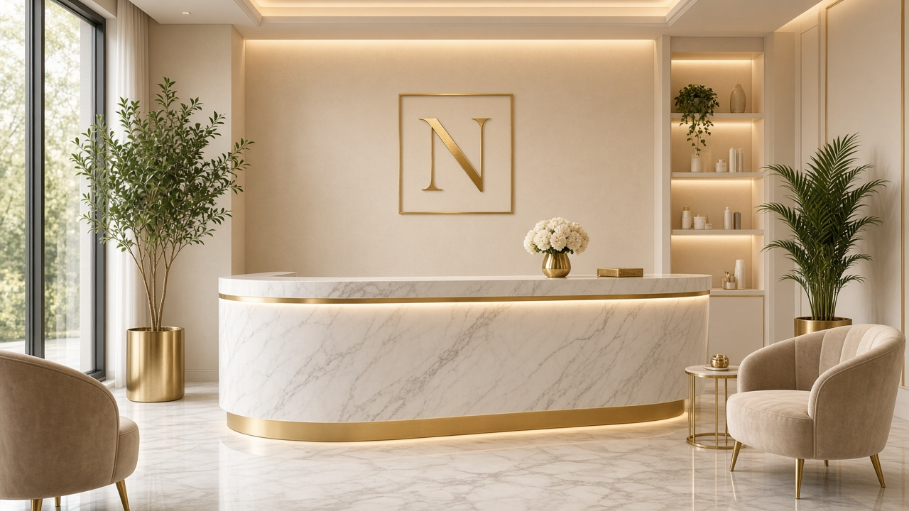
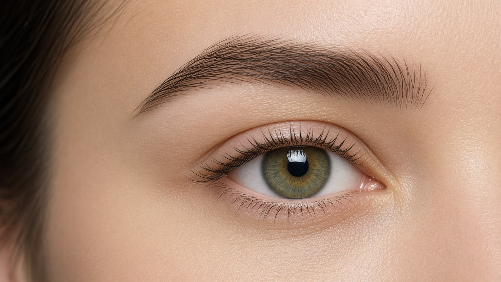

Международные мастера
Техники собраны не в одном городе. В кресле это чувствуется по тому, как держат форму, а не по рассказу о поездках.
Студия на Островского
Больше 15 лет она делает перманент так, чтобы утром лицо не требовало карандаша. В Казани Нина ведёт сложные случаи и в соседнем кабинете ставит руку мастерам.

Новое лицо здесь не обещают. Сначала смотрят, что у вас уже есть: посадка глаз, свои волоски, тон губ. Эскиз рисуют при дневном свете и не берут аппарат, пока вы не скажете, что линия ваша.
Международный опыт в студии — не табличка на ресепшене. Это набор техник, в которых цвет не уходит в графит, а контур не становится чужим. Материалы берут те, что садятся в кожу, а не те, что ярко выглядят во флаконе.
Если случай сложный — асимметрия, старый перманент, почти нет своих бровей — его не отдают «на поток». Его смотрит Нина.

Пять вещей, которые в студии не заменяют друг друга. Если убрать одну, линия перестаёт быть вашей.
Техники собраны не в одном городе. В кресле это чувствуется по тому, как держат форму, а не по рассказу о поездках.
Глубина и плотность штриха подобраны так, чтобы бровь не темнела через месяц и не пропадала через неделю.
Пигмент выбирают под кожу. Модный оттенок сезона, который старит лицо, здесь не предлагают.
Эскиз можно поправить. Процедуру не начинают, пока рисунок не совпал с тем, как вы себя видите.
Цвет в кресле и цвет через месяц — разные. Вторую встречу ставят, когда кожа уже показала правду.

Брови, губы и векиНа ней смотрят лицо и говорят, какая зона уместна. Записаться можно без обязательства делать процедуру в тот же день.
Казань, ул. Островского, 39Б
Каждый день, 10:00–20:00